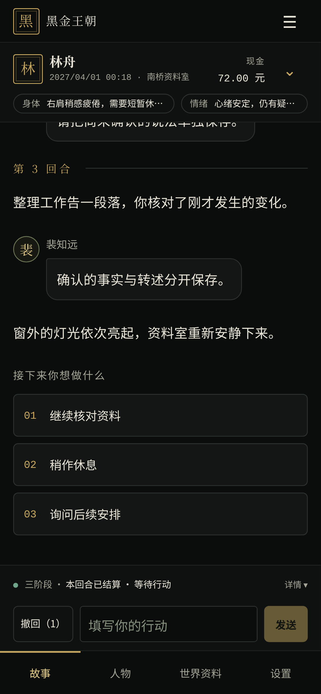
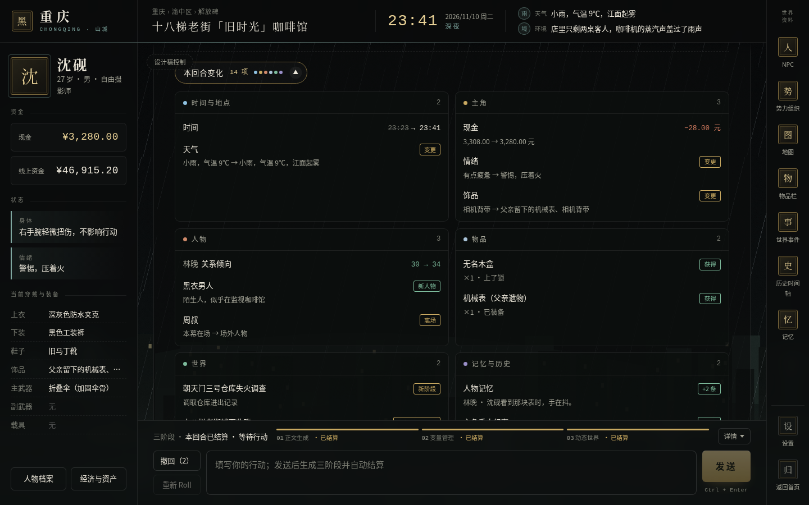
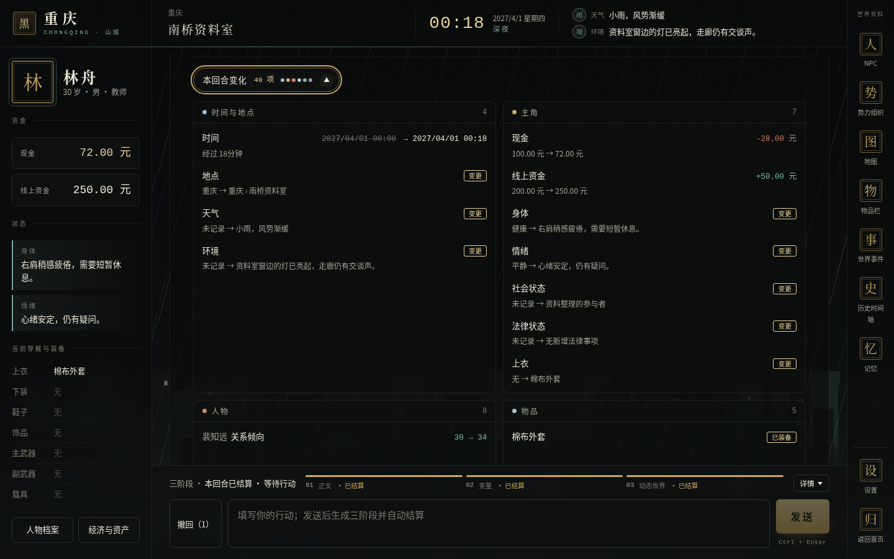
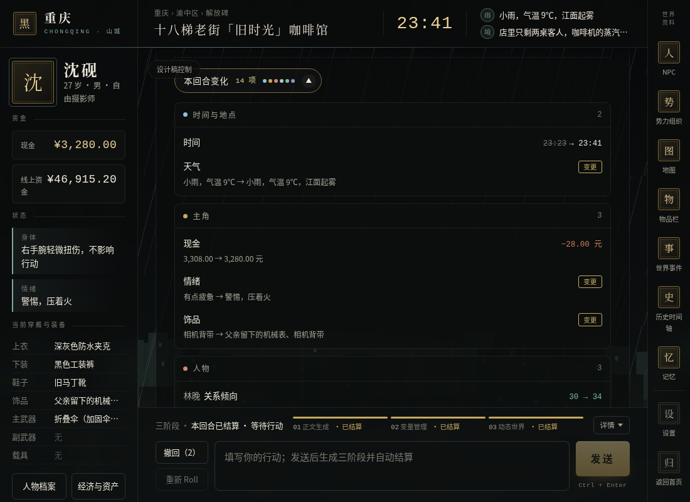
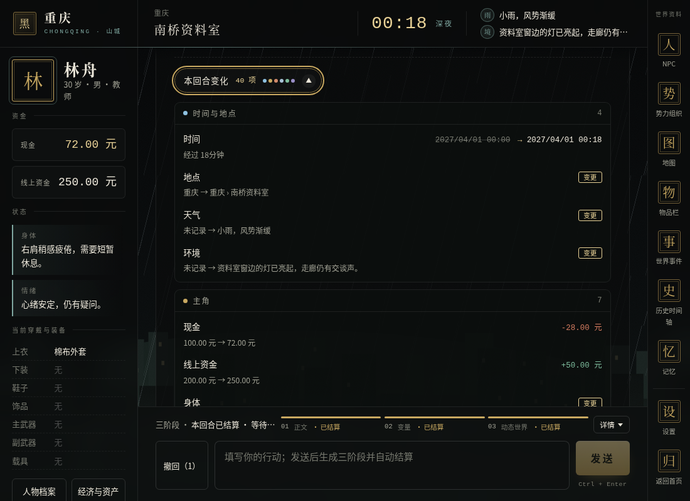
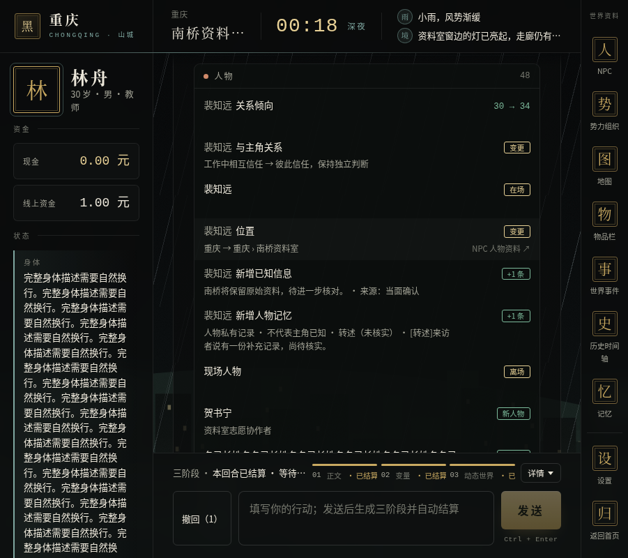
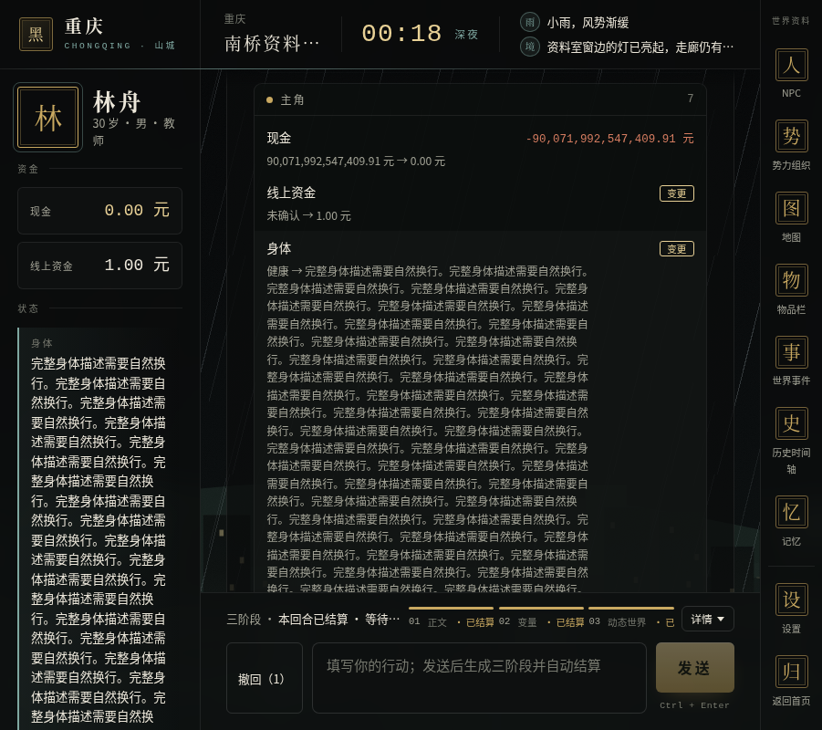
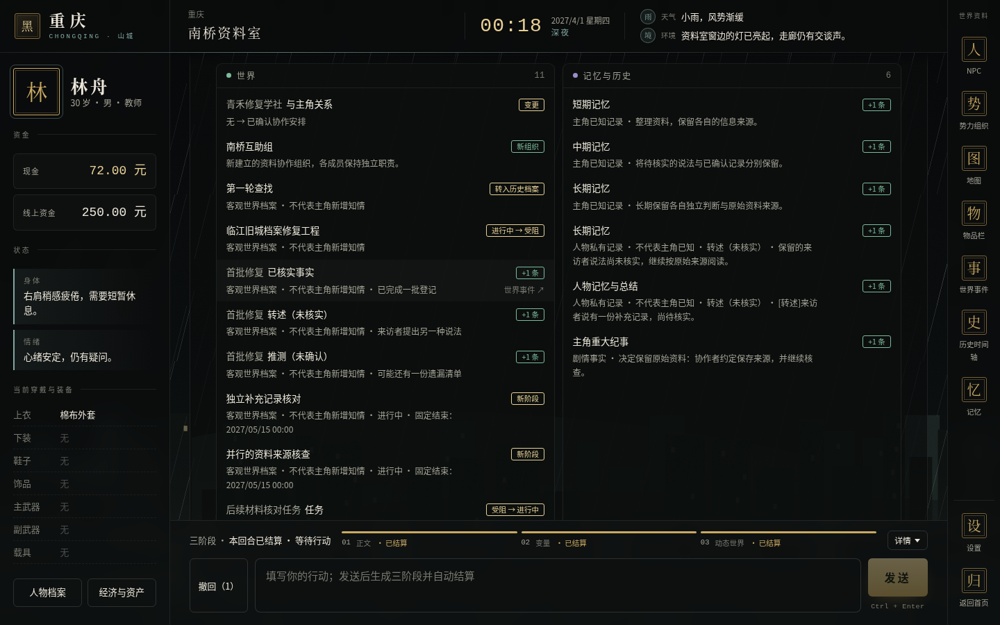
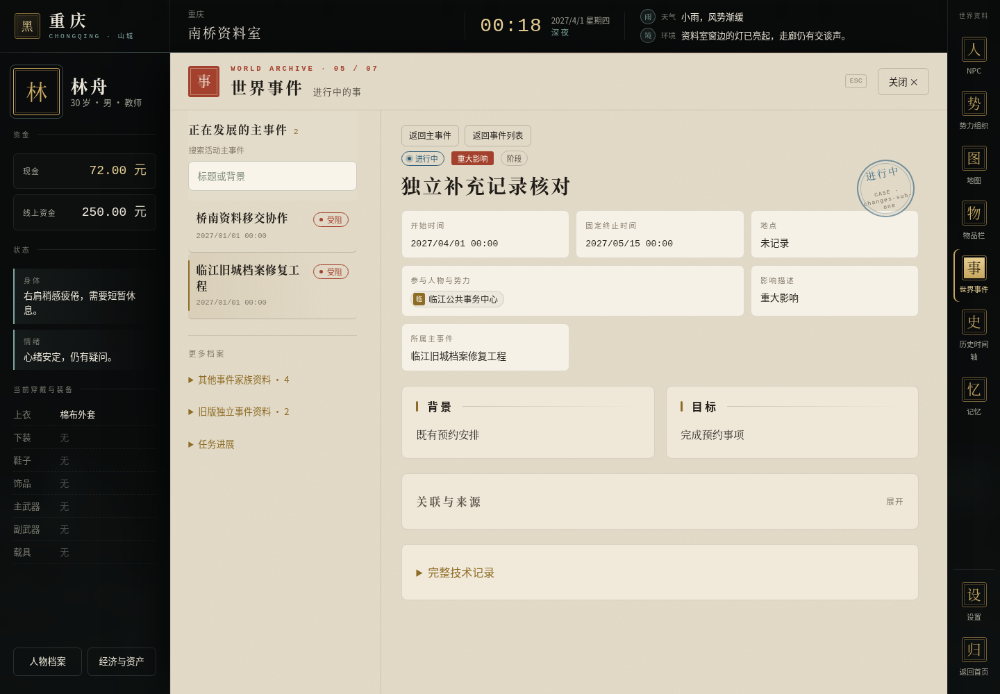

左侧为确认 HTML，右侧为真实 React 测试页面。数据分别是设计演示与合法合成状态，按组件位置、比例、颜色和交互核对。没有使用玩家存档。




| 设计项 | 实现核对 |
|---|---|
| 正文末尾虚线及胶囊 | 最新正式回合内；默认收起；金色数量与六色分类点 |
| 卡片与颜色 | 原 CSS 色值、两列／单列断点、时间删除线、增减与状态标签 |
| 长内容 | 旧→新完整显示；异常长值换行；每组 8 条后展开；原资料全文可达 |
| 现行主界面 | 使用 main 已合并的工作流与档案柜；设计 HTML 中旧 Roll 及旧时段仅保留在参考文件 |
| 无快照与无变化 | 禁用胶囊，前者显示指定不可用说明；不会猜测变化 |





施工报告 · 完整验证 · 所有真实截图及导航目标 · 确认 HTML 原稿